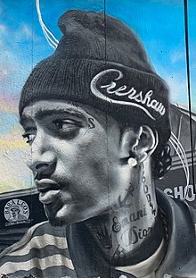

Ermias Joseph Asghedom was born on August 15, 1985, in Crenshaw, Los Angeles, California,to Angelique Smith, an African-American woman, and Dawit Asghedom, an Eritrean immigrant.He was raised in the Crenshaw neighborhood of South Los Angeles with his brother Samuel and his sister Samantha.
Asghedom attended Alexander Hamilton High School in the nearby Castle Heights neighborhood, but dropped out before graduating.At the age of 14, Asghedom left home and joined the local Rollin 60's Neighborhood Crips, a sub-group of the larger Crips gang primarily based in his home neighborhood of Crenshaw.
His stage name, a play on the name of comedian Nipsey Russell, originated as a nickname given to Asghedom by a childhood friend.At the age of 19, Asghedom's father took both him and his brother Samuel on a trip to Eritrea, East Africa for three months in 2004.
Asghedom credited the trip with inspiring him to become a community activist with an "entrepreneurial spirit".

Learn more about Nipsey on Wikipedia